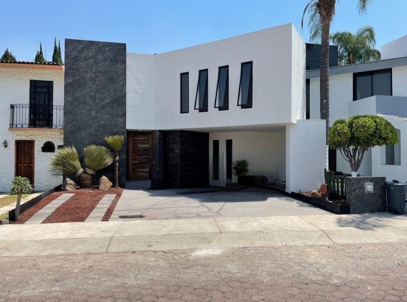
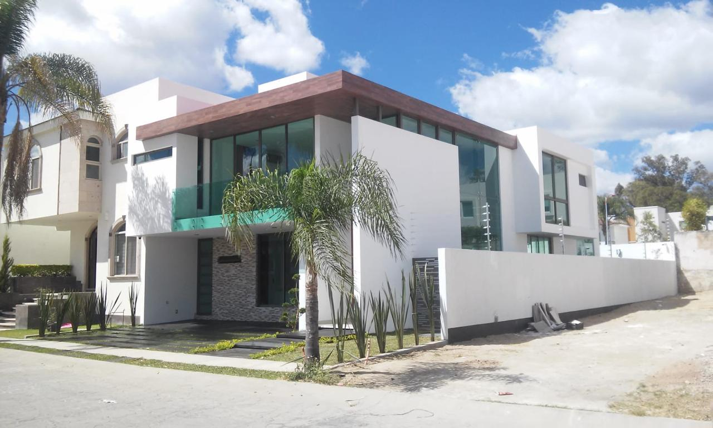
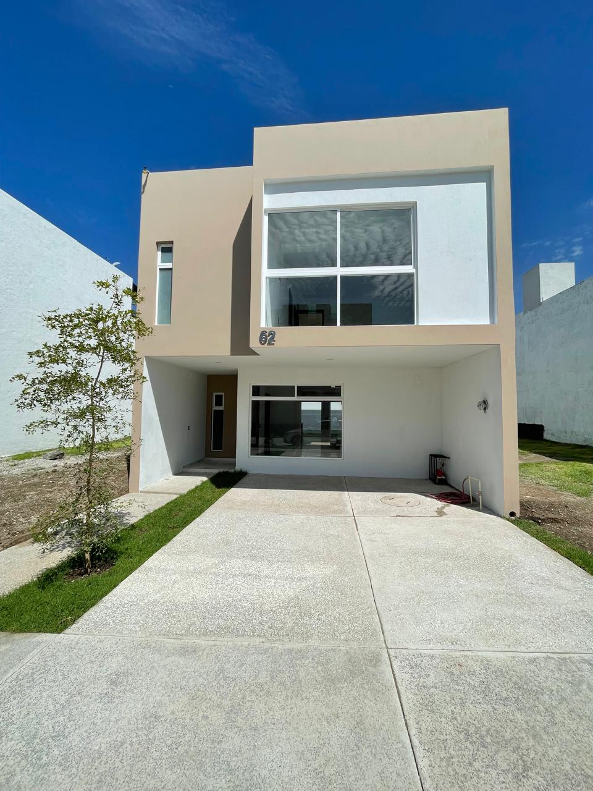
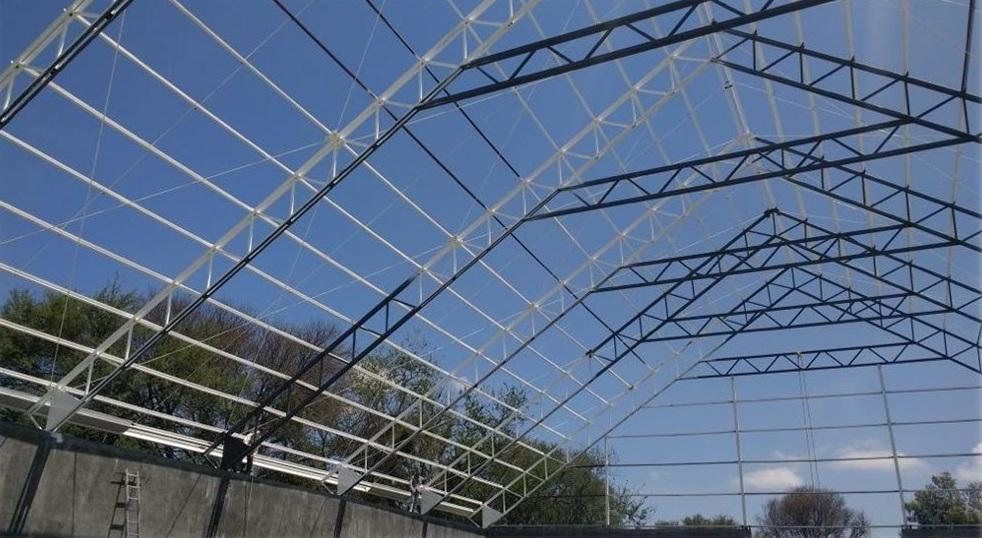
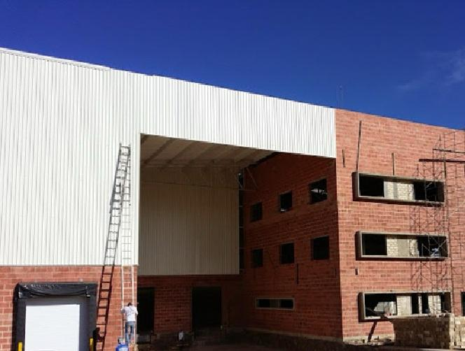

PORTAFOLIO DE PROYECTOS
Conoce nuestros trabajos realizados en diferentes sectores
PROYECTOS RESIDENCIALES

Remodelación de casa en fraccionamiento Ibiza
Lugar: Av. Naciones Unidas, Zapopan, Jalisco
Metros cuadrados: 350 m²
Descripción: Se llevó a cabo la demolición de muros, bóvedas, pisos y acabados para lograr una nueva distribución interior ampliando recámaras, áreas comunes y renovando la fachada llevando a cabo trabajos de albañilerías, fontanería, electricidad, carpintería, herrería, aluminio y pintura.

Construcción de casa habitación en coto Camelia
Lugar: Av. Del Ahuehuete, Zapopan, Jalisco
Metros cuadrados: 400 m²
Descripción: Proyecto consistente en la construcción de una casa habitación de 2 niveles, considerando trabajos de obra negra, obra gris y acabados, logrando crear una fachada que combina elementos de concreto, cristal y revestimiento de piedra.

Casa habitación en Punto Sur
Lugar: Fraccionamiento Punto Sur, Tlajomulco de Zúñiga, Jalisco
Metros cuadrados: 220 m²
Descripción: Construcción de casa habitación de dos niveles a base de estructura de concreto armado, considerando trabajos de instalaciones y terminados.
PROYECTOS COMERCIALES
Remodelación de casa de cambio
Lugar: Zapopan, Jalisco
Metros cuadrados: 90 m²
Descripción: Demoliciones de muros tapón, pisos y acabados para posterior construcción de muros con tablaroca a dos caras, instalación de pisos y azulejos, así como trabajos de instalaciones, carpintería, aluminio, herrería y pintura.
PROYECTOS INDUSTRIALES
Construcción de nave industrial
Lugar: El Salto, Jalisco
Metros cuadrados: 2,000 m² aprox.
Descripción: Construcción de nave industrial considerando trabajos de terracerías para conformación de plataforma, habilitado y montaje de estructura metálica, instalación de cubierta de lámina, trabajos de albañilerías para muro perimetral y estacionamiento, colado de piso con concreto armado, así como lo correspondiente a instalaciones sanitarias, hidráulicas, pluviales y eléctricas.

Bodega de Forrajes
Lugar: Ocotlán, Jalisco
Metros cuadrados: 600 m² aprox.
Descripción: Construcción de bodega con trabajos de habilitado y montaje de estructura metálica, cubierta de lámina, muro perimetral y colado de piso con concreto armado en acabado pulido.

Bodega en planta Farma
Lugar: Tepatitlán, Jalisco
Metros cuadrados: 1,200 m² aprox.
Descripción: Construcción de bodega en la que se realizó el habilitado y montaje de estructura metálica, se instaló lámina para cubierta y muros laterales y de fachada, trabajos de albañilerías para muro perimetral con ladrillo aparente, colado de concreto armado para piso y andenes, considerando también trabajos de instalaciones eléctricas, hidráulicas y sanitarias, y construcción de oficinas con tablaroca.
Bodega en parque industrial Avant
Lugar: Tlajomulco de Zúñiga, Jalisco
Metros cuadrados: 1,000 m² aprox.
Descripción: Trabajos de terracerías para conformación de plataforma, habilitado y montaje de estructura metálica, instalación de lámina para muros y cubierta, instalaciones sanitarias, hidráulicas, pluviales y eléctricas, trabajos de albañilerías para muro perimetral y colado con concreto armado para piso, andenes y estacionamiento.